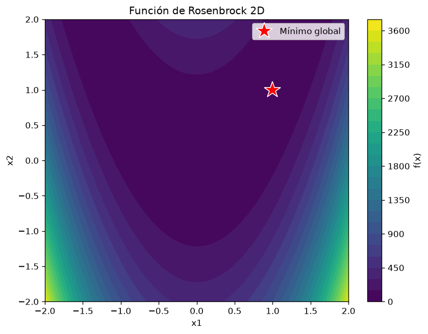
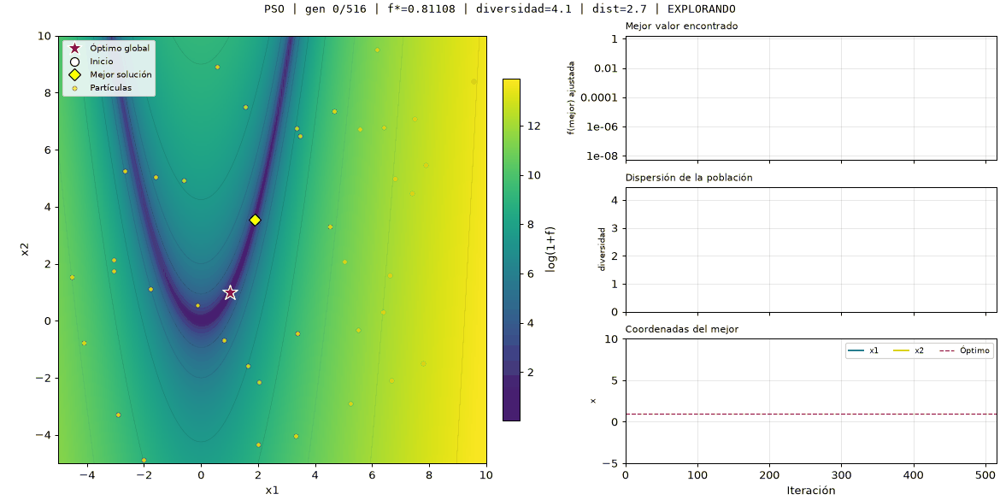
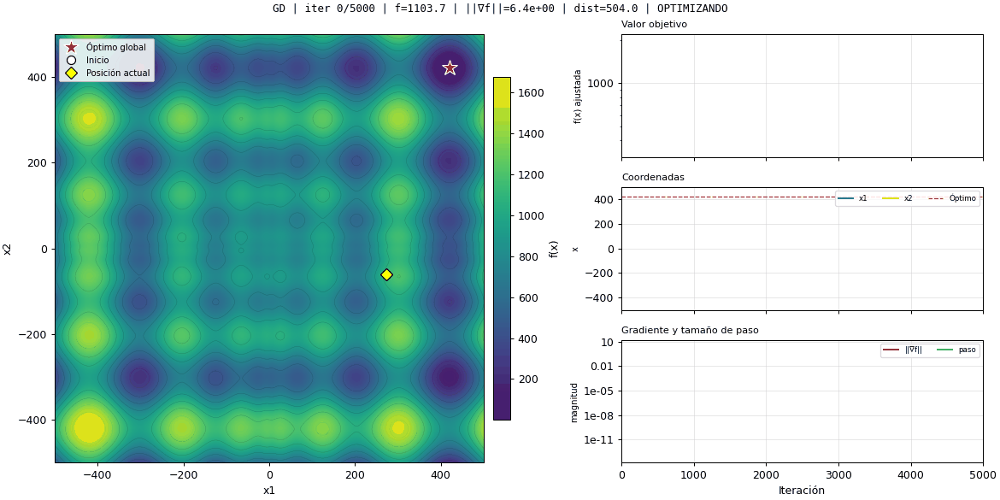
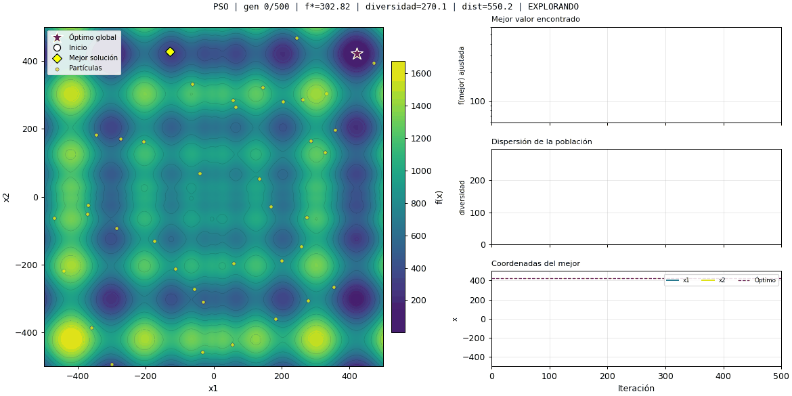

Optimización numérica, metaheurística y combinatoria: descenso por gradiente frente a algoritmos evolutivos, enjambres de partículas y evolución diferencial en funciones de prueba continuas, y colonias de hormigas frente a algoritmos genéticos en un recorrido real por España.
Ana María Barragán Ariza · Mauricio David Timaná Getial · Samuel Fernández Ortiz · Jhojan Esteban Jiménez Jaramillo
Optimizar es encontrar los valores de entrada que minimizan o maximizan una función, y qué tan difícil resulta depende de su geometría: cuántos mínimos locales tiene, si es convexa cerca del óptimo y qué tan bien condicionada está. Este trabajo compara dos familias de métodos frente a esa geometría. La primera usa el gradiente: el descenso por gradiente sigue la dirección de máxima pendiente desde un único punto (Nocedal y Wright, 2006). La segunda la forman metaheurísticas que solo evalúan la función: un algoritmo evolutivo con codificación real (Eiben y Smith, 2015), la optimización por enjambre de partículas (Kennedy y Eberhart, 1995), la evolución diferencial (Storn y Price, 1997) y, para el problema combinatorio, las colonias de hormigas (Dorigo et al., 1996) y los algoritmos genéticos (Goldberg, 1989).
La Parte 1 optimiza dos funciones de prueba continuas en dos y tres dimensiones, escogidas por tener dificultades opuestas. La función de Rosenbrock es unimodal, pero su único mínimo está en el fondo de un valle curvo, estrecho y mal condicionado. La de Schwefel es multimodal: tiene muchos valles y el mejor está lejos del segundo mejor. Así se separan dos causas de fracaso del gradiente: el mal condicionamiento y la presencia de muchos mínimos locales. La pregunta es qué aporta cada familia en valor final de la función y en número de evaluaciones, y cómo lo explica la geometría.
La Parte 2 resuelve un problema del viajante real: recorrer en carro las 47 capitales de provincia de la España peninsular y volver a la de salida al menor costo, sumando combustible, peajes y el tiempo del vendedor valorado en \(v\) €/h. Se compara la colonia de hormigas con el algoritmo genético y se estudia si la ruta óptima cambia al variar \(v\) y a partir de qué valor. Las secciones 4 a 8 recogen las conclusiones, la reproducibilidad, el uso de inteligencia artificial, la verificación de sus respuestas y las referencias.
02 · Parte 1
Optimización numérica
Notación: \(\mathbf{x}=(x_1,\dots,x_d)\in\mathbb{R}^d\) es un punto del dominio, \(d\in\{2,3\}\) la dimensión, \(f\) la función objetivo y \(t\) el índice de iteración.
2.1 Funciones de prueba
Función de Rosenbrock
La función de Rosenbrock, llamada también función banana por la forma de sus curvas de nivel, fue propuesta como caso de prueba para algoritmos de optimización (Rosenbrock, 1960). En \(n\) dimensiones se define en la Ecuación 1:
El dominio \([-5,10]^n\) es el estándar en la literatura para esta función (Surjanovic y Bingham, 2013). El único mínimo global en 2D y 3D es \(\mathbf{x}^*=(1,\dots,1)\) con \(f(\mathbf{x}^*)=0\). La función no es convexa ni separable, aunque es localmente convexa cerca del óptimo. La Figura 1 muestra sus curvas de nivel: el mínimo está en el fondo de un valle parabólico estrecho y curvo cuyo fondo es casi plano, y el número de condición de la hessiana en el óptimo es \(\kappa\approx2.5\times10^{3}\) (sección 2.5). El gradiente analítico se calcula con la Ecuación 2:
Curvas de nivel de la función de Rosenbrock en dos dimensiones

Nota. La estrella roja marca el mínimo global en (1, 1). Fuente: elaboración propia a partir de la Ecuación 1.
Función de Schwefel
La función de Schwefel (Schwefel, 1981) es una de las más engañosas de la optimización continua y forma parte de las colecciones de referencia de funciones de prueba (Jamil y Yang, 2013). Se define en la Ecuación 3:
Su mínimo global es \(f(\mathbf{x}^*)\approx 0\) en \(x_i^*=420.9687\) para todo \(i\), es decir, en una esquina del dominio. La función no es convexa, pero es separable: cada coordenada aporta un término independiente, con 8 mínimos locales por eje, de modo que en \(d\) dimensiones hay \(8^d\) mínimos locales (64 en 2D y 512 en 3D). El segundo mejor valle de cada eje está al otro lado del dominio, cerca de \(x_i\approx-302.5\), y es solo 118.44 unidades peor. Para el descenso por gradiente se usó el gradiente analítico de la Ecuación 4:
La Figura 2 muestra la superficie de la función en 3D. Dentro de cada valle la función es suave, localmente convexa y bien condicionada, así que descender es fácil. Lo difícil es elegir el valle correcto.
Figura 2
Superficie tridimensional de la función de Schwefel
Nota. Superficie 3D interactiva \(z=f(x_1,x_2)\) generada a partir de la Ecuación 3 en una malla de 80 × 80 puntos. El mínimo global está en la esquina positiva del dominio. Fuente: elaboración propia.
2.2 Algoritmos
Descenso por gradiente (GD)
Es un método de primer orden: un único punto se mueve en dirección opuesta al gradiente con una tasa de aprendizaje \(\eta>0\) (Nocedal y Wright, 2006).
El algoritmo evolutivo con codificación real combina selección por torneo, cruce BLX-\(\alpha\) (Eshelman y Schaffer, 1993), mutación gaussiana con desviación decreciente y elitismo (Eiben y Smith, 2015). Cada padre se elige como el mejor de \(k=3\) individuos tomados al azar. Dos padres \(\mathbf{p}_1,\mathbf{p}_2\) generan un hijo \(\mathbf{h}\) muestreando cada componente en un intervalo extendido (Ecuación 6), y después cada componente se perturba con probabilidad \(p_m=0.1\) y desviación \(\sigma_t\) (Ecuación 7). Los 2 mejores individuos pasan intactos a la siguiente generación.
\(\text{hi}\) y \(\text{lo}\) son los límites del dominio y \(T\) el número máximo de generaciones.
Optimización por enjambre de partículas (PSO)
Cada partícula \(i\) tiene una posición \(\mathbf{x}_i\) y una velocidad \(\mathbf{v}_i\). La velocidad combina inercia, atracción hacia la mejor posición personal \(\mathbf{p}_i\) y atracción hacia la mejor posición del enjambre \(\mathbf{g}\) (Ecuación 8) (Kennedy y Eberhart, 1995). Las posiciones se recortan al dominio en cada paso.
\(w\) es el peso de inercia, \(c_1,c_2\) los coeficientes cognitivo y social y \(r_1,r_2\sim U(0,1)\).
Evolución diferencial (DE)
Para cada individuo \(\mathbf{x}_i\) se construye un vector mutante a partir de la diferencia entre otros dos individuos (Ecuación 9), se cruza con el padre de forma binomial (Ecuación 10) y el resultado reemplaza al padre solo si es mejor (Ecuación 11) (Storn y Price, 1997).
Como el paso de DE nace de diferencias entre individuos, es grande cuando la población está dispersa y pequeño cuando se concentra. Esta propiedad, que explora al principio y refina al final, será clave en la discusión.
2.3 Protocolo y comparación justa
Cada combinación de función, método y dimensión se ejecutó en 30 corridas independientes, cada una desde una condición inicial aleatoria dentro del dominio. La Tabla 1 resume el protocolo y los hiperparámetros, y marca en qué difieren las dos funciones.
Tabla 1. Protocolo e hiperparámetros de la Parte 1. Fuente: elaboración propia; configuración del repositorio (configs/CLI_defaults_rosenbrock.json para Rosenbrock).
Elemento
Rosenbrock
Schwefel
¿Igual en ambas?
Dimensiones
2 y 3
Sí
Corridas por método y dimensión
30
Sí
Semillas
\(42+i\) en la corrida \(i\)
PENDIENTE: no documentadas
Por confirmar
Punto inicial
Aleatorio en \([-5,10]^d\)
Aleatorio en \([-500,500]^d\)
Sí (dominio de cada función)
Iteraciones máximas
2000
Sí
Presupuesto de \(E_{eq}\)
No hay un máximo común de evaluaciones equivalentes
No (PENDIENTE)
Parada del descenso por gradiente
\(\lVert\nabla f\rVert < 10^{-8}\)
Paso menor que \(10^{-6}\)
No
Parada de los métodos poblacionales
Criterio de convergencia de la configuración o límite de iteraciones
Población 40, torneo \(k=3\), BLX-\(\alpha\) con \(\alpha=0.5\), \(p_m=0.1\), 2 élites
Sí
PSO
40 partículas, \(w = 0.7\), \(c_1 = c_2 = 1.5\)
Sí
Evolución diferencial
Población 40, \(F = 0.8\), \(CR = 0.9\)
Sí
Los hiperparámetros de las metaheurísticas son valores estándar y no se ajustaron por método. La tasa de aprendizaje del gradiente sí es distinta en cada función: en Rosenbrock tuvo que reducirse a \(10^{-4}\) porque valores mayores hacen diverger el método. Para elegirla se hizo un barrido preliminar en Rosenbrock 2D con dominio \([-2,2]^2\). La Tabla 2 muestra que la ventana útil es extremadamente estrecha: con \(\eta\le0.001\) el método avanza demasiado lento, y desde \(\eta=0.0012\) diverge (NaN) en pocas iteraciones. Como el experimento principal usa el dominio más amplio \([-5,10]^n\), donde la curvatura lejos del óptimo es aún mayor, se adoptó \(\eta=10^{-4}\) para evitar la divergencia en todas las corridas, a costa de avanzar todavía más despacio.
Tabla 2. Sensibilidad del descenso por gradiente a la tasa de aprendizaje en Rosenbrock 2D (experimento preliminar con dominio \([-2,2]^2\)). Fuente: elaboración propia.
\(\eta\)
Valor final de \(f\)
Comportamiento
0.0005
9.15
Avance demasiado lento
0.0010
3.30
Avance lento
0.0012
NaN
Divergencia
0.0014
NaN
Divergencia
0.0020
NaN
Divergencia
0.0050
NaN
Divergencia
0.0100
NaN
Divergencia
Una sola unidad de esfuerzo
Una iteración de PSO evalúa \(f\) en 40 partículas y una del gradiente calcula un solo gradiente, así que comparar por iteraciones no tiene sentido. Se cuentan por separado las evaluaciones de la función, \(E_f\), y las del gradiente, \(E_{\nabla f}\), y luego se unen en una sola cifra. Si el gradiente no se conociera de forma analítica, aproximarlo por diferencias centrales (Ecuación 12) costaría dos evaluaciones de \(f\) por coordenada, es decir, \(2d\) evaluaciones en dimensión \(d\) (Nocedal y Wright, 2006). De ahí sale el costo equivalente de la Ecuación 13:
En 2D un gradiente equivale a 4 evaluaciones de \(f\) y en 3D, a 6. Por ejemplo, si el descenso por gradiente hace 2000 iteraciones en Rosenbrock 2D, su costo equivalente es \(0 + 4\times2000 = 8000\). Solo se cuenta lo que hace avanzar al algoritmo: en GD no se cuentan las evaluaciones de \(f\) que solo sirven para guardar el historial de las gráficas, y en el algoritmo evolutivo los individuos élite no se vuelven a evaluar. El gradiente analítico de ambas funciones cuesta en la práctica menos que \(2d\) evaluaciones de \(f\), así que la regla es conservadora: penaliza al gradiente.
De cada conjunto de 30 corridas se reportan la media, la desviación estándar, el mejor y el peor valor final de \(f\), la tasa de éxito con el umbral \(f\le10^{-3}\) y el número promedio de iteraciones y evaluaciones. El umbral es exigente: en Schwefel exige haber encontrado el valle global en todas las coordenadas, ya que el segundo mejor valle queda 118.44 unidades por encima.
La comparación todavía no es del todo justa.
Los criterios de parada difieren entre funciones y los métodos comparten el límite de iteraciones, no un presupuesto de evaluaciones (Tabla 1). Por eso los costos se comparan solo dentro de cada función. PENDIENTE: fijar el mismo máximo de \(E_{eq}\) para todos los métodos, unificar la parada y repetir las corridas; los resultados de la sección 2.4 son provisionales hasta entonces.
2.4 Resultados
En las Tablas 3 y 4, \(M\) es la media, \(DE\) la desviación estándar, Mejor y Peor el menor y el mayor valor final de \(f\), Éxito el porcentaje de corridas con \(f\le10^{-3}\) e Iter. el número medio de iteraciones; las evaluaciones son promedios por corrida y \(E_{eq}\) se calcula con la Ecuación 13.
Rosenbrock: el valle que el gradiente no alcanza a recorrer
La Figura 3 muestra que el descenso por gradiente avanza hacia el valle, pero tras 2000 iteraciones apenas ha recorrido una fracción del camino hacia el mínimo; el panel derecho muestra que la norma del gradiente se mantiene del orden de \(10^{-1}\): el gradiente no se anula, pero el paso es demasiado pequeño para avanzar. En la Figura 4, las partículas de PSO empiezan dispersas y se concentran progresivamente sobre el óptimo, como confirma el panel de diversidad de la población.
Figura 3
Evolución del descenso por gradiente en Rosenbrock 2D
Nota. A la izquierda, la trayectoria sobre las curvas de nivel; a la derecha, la evolución del valor objetivo, de las coordenadas y de \(\lVert\nabla f\rVert\). Fuente: elaboración propia.
Figura 4
Evolución del enjambre de partículas en Rosenbrock 2D

Nota. A la izquierda, las partículas sobre las curvas de nivel; a la derecha, la evolución del mejor valor, de las coordenadas y de la diversidad de la población. Fuente: elaboración propia.
La Tabla 3 muestra que el gradiente no alcanzó el umbral en ninguna de las 60 corridas, mientras que PSO y DE lo alcanzaron en todas. El algoritmo evolutivo pasa de un 57 % de éxito en 2D a un 3 % en 3D.
Tabla 3. Resultados de los cuatro métodos en Rosenbrock 2D y 3D (30 corridas por método y dimensión). Fuente: elaboración propia.
Método
M
DE
Mejor
Peor
Éxito
Iter.
\(E_f\)
\(E_{\nabla f}\)
\(E_{eq}\)
2D (\(2d=4\))
Descenso por gradiente
\(4.89\)
\(4.96\)
\(4.97\times10^{-1}\)
\(1.57\times10^{1}\)
0 %
2000
0
2 000
8 000
Algoritmo evolutivo
\(4.44\times10^{-2}\)
\(1.48\times10^{-1}\)
\(3.48\times10^{-11}\)
\(6.14\times10^{-1}\)
57 %
1627
61 884
0
61 884
PSO
\(2.22\times10^{-20}\)
\(8.36\times10^{-20}\)
\(0\)
\(4.39\times10^{-19}\)
100 %
544
21 813
0
21 813
Evolución diferencial
\(2.03\times10^{-14}\)
\(1.90\times10^{-14}\)
\(1.53\times10^{-15}\)
\(6.47\times10^{-14}\)
100 %
126
5 092
0
5 092
3D (\(2d=6\))
Descenso por gradiente
\(2.29\)
\(2.65\)
\(9.23\times10^{-3}\)
\(1.02\times10^{1}\)
0 %
2000
0
2 000
12 000
Algoritmo evolutivo
\(8.23\times10^{-1}\)
\(1.20\)
\(3.95\times10^{-4}\)
\(4.91\)
3 %
2000
76 040
0
76 040
PSO
\(4.37\times10^{-11}\)
\(7.84\times10^{-11}\)
\(2.64\times10^{-16}\)
\(3.58\times10^{-10}\)
100 %
2000
80 040
0
80 040
Evolución diferencial
\(2.09\times10^{-13}\)
\(1.48\times10^{-13}\)
\(1.35\times10^{-14}\)
\(5.63\times10^{-13}\)
100 %
219
8 815
0
8 815
Ninguna corrida del gradiente cumplió el criterio \(\lVert\nabla f\rVert<10^{-8}\): todas se detuvieron en el límite de 2000 iteraciones. En negrita, el mejor resultado de M, Éxito y \(E_{eq}\) en cada dimensión.
Schwefel: un punto frente a una nube
Las Figuras 5 y 6 muestran una corrida de cada familia en 2D sobre la misma superficie, con el óptimo marcado por una estrella roja. El descenso por gradiente baja por la ladera más cercana y se detiene en el primer valle (Figura 5). El enjambre empieza repartido por todo el dominio y se concentra poco a poco en un valle (Figura 6).
Figura 5
Trayectoria del descenso por gradiente sobre Schwefel 2D

Nota. Corrida individual con \(\eta=0.1\). Fuente: elaboración propia.
Figura 6
Evolución del enjambre de partículas sobre Schwefel 2D

Nota. Corrida individual con 40 partículas. Fuente: elaboración propia.
La Tabla 4 muestra que DE es el único método que encuentra el óptimo casi siempre. El gradiente es el más barato, pero solo acierta una vez en 60 corridas. Todos los métodos terminan en milisegundos, así que en este problema el costo relevante es el número de evaluaciones y no el tiempo de cómputo.
Tabla 4. Resultados de los cuatro métodos en Schwefel 2D y 3D (30 corridas por método y dimensión). Fuente: elaboración propia.
Método
M
DE
Mejor
Peor
Éxito
Iter.
\(E_f\)
\(E_{\nabla f}\)
\(E_{eq}\)
2D (\(2d=4\))
Descenso por gradiente
456.37
174.96
≈ 0
710.70
3 %
553
0
553
2 214
Algoritmo evolutivo
55.27
60.10
≈ 0
118.44
53 %
119
4 576
0
4 576
PSO
74.35
77.88
≈ 0
236.88
47 %
168
6 775
0
6 775
Evolución diferencial
≈ 0
≈ 0
≈ 0
≈ 0
100 %
125
5 040
0
5 040
3D (\(2d=6\))
Descenso por gradiente
667.84
222.47
118.44
1125.73
0 %
575
0
575
3 449
Algoritmo evolutivo
86.85
92.96
≈ 0
355.32
43 %
190
7 242
0
7 242
PSO
109.88
105.95
≈ 0
355.32
37 %
196
7 884
0
7 884
Evolución diferencial
4.42
24.21
≈ 0
132.61
97 %
208
8 343
0
8 343
≈ 0 indica un valor menor que \(10^{-9}\). En negrita, el mejor resultado de M, Éxito y \(E_{eq}\) en cada dimensión.
2.5 Discusión
La comparación de las Tablas 3 y 4 separa las dos causas de fracaso del gradiente. Por la diferencia de criterios de parada (Tabla 1), los costos se comparan entre métodos de una misma función, no entre funciones.
Condicionamiento: Rosenbrock
Rosenbrock tiene un único mínimo, así que el fracaso del gradiente no se debe a mínimos locales sino al mal condicionamiento. En el óptimo, la matriz hessiana en 2D es
El descenso por gradiente con paso fijo solo es estable en una región cuadrática si \(\eta<2/\lambda_{\max}\) (Nocedal y Wright, 2006), que aquí es \(\eta<0.002\) incluso cerca del óptimo, y menos aún lejos de él, donde la curvatura transversal al valle crece. Ese límite es del mismo orden que el umbral de divergencia observado en la Tabla 2. Pero con un paso tan pequeño, el avance a lo largo del fondo del valle, cuya curvatura es \(\lambda_{\min}\approx0.4\), es lentísimo: la componente del error en esa dirección se reduce en un factor \(1-\eta\lambda_{\min}\approx 1-4\times10^{-5}\) por iteración con \(\eta=10^{-4}\). Esto es lo que se ve en la Figura 3: el punto cae rápido al valle y luego se arrastra por él sin llegar en 2000 iteraciones. El gradiente queda atrapado entre dos males: un paso grande diverge y uno pequeño no avanza.
Las metaheurísticas no dependen de la escala del gradiente. PSO y DE alcanzaron el umbral en el 100 % de las corridas en ambas dimensiones (Tabla 3). PSO fue el más preciso, con media de \(2.22\times10^{-20}\) en 2D, porque cuando las partículas se concentran cerca del mínimo ajustan su velocidad de forma muy fina (Figura 4). DE fue el más eficiente: logró el éxito con 5 092 evaluaciones equivalentes en 2D, 4.3 veces menos que PSO y 1.6 veces menos que el gradiente, que además no llegó. En 3D la diferencia crece: 8 815 evaluaciones de DE frente a 80 040 de PSO, 9.1 veces menos. El algoritmo evolutivo fue el menos robusto: su mejor corrida es competitiva, pero su desviación estándar es alta y su éxito cae del 57 % al 3 % al pasar a 3D, lo que indica que la combinación de elitismo y mutación decreciente pierde la diversidad necesaria para seguir un valle curvo en más dimensiones.
Llama la atención que la media del gradiente en Rosenbrock sea menor en 3D (2.29) que en 2D (4.89). No debe leerse como una mejora: la tasa de éxito es 0 % en ambos casos y los valores dependen de dónde cayó el punto inicial dentro de un dominio amplio. Con 30 corridas y una desviación estándar del mismo orden que la media, la diferencia no es concluyente.
Número de mínimos locales: Schwefel
En Schwefel el gradiente falla porque hay demasiados valles. Solo conoce la pendiente del punto donde está, así que baja al valle en el que empezó (Figura 5); de los \(8^d\) valles, solo uno es el global. Con un punto inicial uniforme, la probabilidad de caer en su cuenca es pequeña, y eso es lo que muestran el 3 % de éxito en 2D y el 0 % en 3D (Tabla 4). Dentro del valle, en cambio, la función es suave y localmente convexa, y el gradiente converge con pocas evaluaciones: por eso es el más barato. Su fracaso no es de convergencia sino de exploración.
Los heurísticos reparten puntos por todo el dominio y por eso encuentran el valle global mucho más a menudo. Cuando fallan no lo hacen al azar: sus peores valores, 118.44, 236.88 y 355.32, son múltiplos exactos de 118.44, es decir, la población quedó en el valle señuelo en una, dos o tres coordenadas. Con el mismo criterio de parada, los tres gastan una cantidad parecida de evaluaciones, entre 4 500 y 8 500; lo que los distingue es la fiabilidad. DE acierta casi siempre porque sus pasos nacen de diferencias entre individuos (Ecuación 9): son grandes mientras la población está repartida entre valles y se encogen cuando se concentra en uno. PSO y el algoritmo evolutivo, en cambio, convergen antes de haber descartado el valle señuelo.
El criterio de parada resultó decisivo para que la comparación fuera justa. Sin él, el algoritmo evolutivo seguía iterando hasta 59 000 evaluaciones en 2D y 76 000 en 3D con la misma tasa de éxito, porque su mutación tarda en apagarse (Ecuación 7) y la población no se junta sola. Esas evaluaciones no mejoraban el resultado.
Qué aportó cada familia
La Tabla 5 relaciona cada propiedad geométrica descrita en la sección 2.1 con el efecto observado sobre cada familia de métodos.
Tabla 5. Relación entre la geometría de cada función y el aporte de cada familia de métodos. Fuente: elaboración propia a partir de las Tablas 3 y 4.
Propiedad geométrica
Efecto sobre el gradiente
Efecto sobre los heurísticos
Convexidad local dentro de un valle (ambas)
Ventaja: converge rápido y con pocas evaluaciones una vez dentro del valle correcto
Refinan más despacio, porque no usan la pendiente
Mal condicionamiento (Rosenbrock, \(\kappa\approx2.5\times10^3\))
Fracaso: el paso estable es diminuto y el avance por el valle es lentísimo (0 % de éxito)
Ventaja: no dependen de la escala del gradiente; PSO y DE aciertan el 100 %
Muchos mínimos locales (Schwefel, \(8^d\))
Fracaso: queda en el valle donde empezó (3 % y 0 % de éxito)
Ventaja: la población explora varios valles a la vez; DE acierta el 97 %–100 %
Aumento de dimensión (2D → 3D)
Empeora en ambas funciones
DE apenas lo nota; PSO pierde precisión pero no éxito en Rosenbrock; el EA se degrada
En síntesis, el gradiente aporta eficiencia local: cuando el punto ya está en la cuenca correcta y el problema está bien condicionado, es el método más barato. Los heurísticos aportan exploración global y robustez frente a la escala del problema, a cambio de más evaluaciones. La regla conservadora de \(2d\) evaluaciones por gradiente no cambia esta lectura: incluso si el gradiente costara una sola evaluación, su tasa de éxito seguiría siendo cero.
03 · Parte 2
Optimización combinatoria
3.1 Formulación
El vendedor debe visitar las 47 capitales de provincia de la España peninsular y volver a la ciudad de salida. Se excluyen Palma, Las Palmas de Gran Canaria y Santa Cruz de Tenerife por ser insulares, y Ceuta y Melilla por no ser provincias ni ser accesibles por carretera desde la península. Sea \(V=\{1,\dots,n\}\) el conjunto de \(n=47\) capitales y \(C_{ij}\) el costo de ir de la ciudad \(i\) a la ciudad \(j\). Un recorrido cerrado es una permutación \(\pi\) de \(V\), y el problema consiste en encontrar la permutación de costo mínimo (Applegate et al., 2006):
De forma equivalente, con variables binarias \(x_{ij}=1\) si el recorrido va directamente de \(i\) a \(j\), el problema se escribe como el programa entero de la Ecuación 16 (Dantzig et al., 1954):
Las dos primeras restricciones obligan a entrar y salir una vez de cada ciudad; la tercera elimina subciclos. Como los tiempos de viaje de ida y vuelta no son iguales, \(C_{ij}\neq C_{ji}\) y el problema es un TSP asimétrico. Fijando la ciudad de salida, hay \((n-1)! = 46! \approx 5.5\times10^{57}\) recorridos distintos; incluso si los costos fueran simétricos quedarían \(46!/2\). Revisarlos todos es imposible, por eso se usan metaheurísticas.
El costo de cada tramo suma el combustible, los peajes y el tiempo del vendedor (Ecuación 17):
\(d_{ij}\) es la distancia por carretera en km, \(t_{ij}\) el tiempo de viaje en horas, \(c\) el consumo del vehículo en L/100 km, \(p\) el precio del combustible en €/L, \(P_{ij}\) el peaje del trayecto en € y \(v\) el valor de la hora del vendedor en €/h.
El valor de la hora \(v\) traduce cada hora de viaje a dinero. Reúne el costo laboral directo (salario, prestaciones y sobrecostos) y el costo de oportunidad, es decir, las ventas que se dejan de hacer mientras se conduce; la literatura sobre el valor del tiempo de viaje en Europa lo estudia con detalle (Wardman et al., 2016). Con \(v=0\) solo importan el combustible y los peajes. Cuanto mayor es \(v\), más conviene ahorrar horas aunque cueste más en carretera.
3.2 Datos y fuentes
Todos los datos se descargaron una vez y se guardaron en archivos CSV, de modo que los algoritmos corren sin conexión. La Tabla 6 resume de dónde sale cada componente del costo de la Ecuación 17.
Tabla 6. Fuentes de los componentes del costo y fecha de consulta. Fuente: elaboración propia.
Componente
Cómo se obtuvo
Fuente
Consulta
Distancias \(d_{ij}\) y tiempos \(t_{ij}\)
Servicio Table de OSRM en modo conducción, una sola consulta para los 47 × 47 pares sobre la red vial de OpenStreetMap
HERE Routing API v8 (return=tolls, en EUR) para los 1 081 pares únicos de una matriz simétrica: 644 pares con peaje activo (máximo 84.15 €), guardados en peajes_espana_eur.csv y contrastados con las tarifas del Ministerio de Transportes y Movilidad Sostenible
Como los tiempos de ida y vuelta no son iguales, las instancias se guardaron como TSP asimétrico en formato TSPLIB95 con matriz completa (Reinelt, 1991); la matriz de peajes, en cambio, usa el mismo precio en ambos sentidos. Para cada valor de \(v\) se construye una matriz \(C(v)\) de 47 × 47 con la Ecuación 17, y cada solución final se evalúa por separado con las matrices de distancia, tiempo, combustible y peajes para desglosar su costo. La red de peajes española cambia con el vencimiento de las concesiones, así que los peajes corresponden a la fecha de consulta.
3.3 Algoritmos
Colonia de hormigas (ACO)
Cada hormiga construye un recorrido ciudad por ciudad. Desde la ciudad \(i\), elige la siguiente ciudad \(j\) entre las no visitadas \(\mathcal{N}_i\) con una probabilidad que combina la feromona acumulada \(\tau_{ij}\) y la visibilidad \(\eta_{ij}=1/C_{ij}\) (Ecuación 18). Al terminar la iteración, la feromona se evapora a tasa \(\rho\) y cada hormiga \(k\) deposita una cantidad inversamente proporcional al costo \(L_k\) de su recorrido en los tramos que usó (Ecuación 19) (Dorigo et al., 1996).
\[\tau_{ij} \leftarrow (1-\rho)\,\tau_{ij} + \sum_{k=1}^{m}\Delta\tau_{ij}^{k}, \qquad \Delta\tau_{ij}^{k} = \begin{cases}1/L_k & \text{si la hormiga } k \text{ usó el tramo } (i,j)\\ 0 & \text{en otro caso}\end{cases} \tag{19}\]
El exponente \(\alpha\) pondera la memoria colectiva y \(\beta\) la información heurística. Con \(\beta>0\), incluso la primera generación de hormigas prefiere los tramos baratos.
Algoritmo genético (GA)
El algoritmo genético mantiene una población de recorridos completos codificados como permutaciones (Goldberg, 1989). En cada generación se seleccionan los mejores recorridos según su costo \(L(\pi)\), se cruzan y se mutan. Como un hijo debe seguir siendo una permutación válida, se usan operadores específicos: el cruce parcialmente mapeado (PMX) copia un segmento de un padre y completa el resto respetando el orden del otro sin repetir ciudades (Goldberg y Lingle, 1985), y la mutación por inversión toma dos posiciones \((a<b)\) e invierte el tramo entre ellas (Ecuación 20).
A diferencia de ACO, la población inicial del GA es aleatoria: no usa la matriz de costos para construir recorridos, solo para evaluarlos.
PENDIENTE: contrastar con el código.
Verificar que las Ecuaciones 18 y 19 sean las que implementa scikit-opt (forma exacta del depósito de feromona y valor inicial de \(\tau\)) y describir los operadores de selección, cruce y mutación del GA tal como están en el código.
Ambos métodos se implementaron con la librería scikit-opt (Guo, s. f.) y se ejecutaron con la configuración de la Tabla 7. Con 60 recorridos por iteración durante 150 iteraciones, cada método construye o evalúa del orden de 9 000 recorridos, de modo que el presupuesto de búsqueda es comparable.
Tabla 7. Protocolo e hiperparámetros de la Parte 2. Fuente: elaboración propia.
Elemento
Colonia de hormigas
Algoritmo genético
Ciudades
47 capitales peninsulares, recorrido cerrado
Valores de la hora \(v\)
0, 15, 25, 35 y 60 €/h
Población
60 hormigas
60 recorridos
Iteraciones
150
150 generaciones
Parámetros
\(\alpha = 1\), \(\beta = 2\), \(\rho = 0.1\)
Probabilidad de mutación 0.1; resto de operadores por defecto de scikit-opt
Semilla y corridas
Semilla 42, una corrida por valor de \(v\)
3.4 Resultados
Las Figuras 7 y 8 muestran cómo evoluciona la mejor ruta de cada método con el valor de referencia \(v=25\) €/h: a la izquierda de cada animación, el recorrido sobre el mapa de España; a la derecha, la curva del costo mínimo. La estrella roja marca la ciudad de salida.
Figura 7
Evolución de la mejor ruta de la colonia de hormigas con \(v=25\) €/h
Nota. Costo final de 2 740.42 €. Fuente: elaboración propia.
Figura 8
Evolución de la mejor ruta del algoritmo genético con \(v=25\) €/h
Nota. Costo final de 3 667.56 €. Fuente: elaboración propia.
La Tabla 8 desglosa el costo de la mejor ruta que encontró cada método con cada valor de la hora. ACO gana en los cinco casos: el algoritmo genético es entre un 32 % y un 46 % más caro; dicho de otro modo, las rutas de ACO son entre un 24 % y un 32 % más baratas.
Tabla 8. Resultados de la colonia de hormigas y del algoritmo genético según el valor de la hora del vendedor. Fuente: elaboración propia.
\(v\) (€/h)
Método
Costo total (€)
GA frente a ACO
Distancia (km)
Tiempo (h)
Combustible (€)
Peajes (€)
Tiempo vendedor (€)
Cómputo (s)
0
ACO
631.83
—
7 160.21
87.50
610.43
21.40
0.00
22.00
GA
922.94
+46.1 %
9 831.64
119.05
838.18
84.76
0.00
0.93
15
ACO
1 886.73
—
6 617.88
81.57
564.18
99.01
1 223.54
22.05
GA
2 700.16
+43.1 %
9 815.96
119.13
836.79
76.41
1 786.96
0.93
25
ACO
2 740.42
—
6 797.46
83.44
579.50
74.96
2 085.96
22.21
GA
3 667.56
+33.8 %
9 182.18
111.65
782.82
93.48
2 791.26
0.94
35
ACO
3 546.32
—
6 733.58
82.53
574.04
83.76
2 888.52
21.95
GA
5 138.39
+44.9 %
10 011.57
119.87
853.51
89.45
4 195.43
0.94
60
ACO
5 616.02
—
6 746.54
82.70
575.14
78.61
4 962.27
22.07
GA
7 421.74
+32.2 %
9 049.61
108.56
771.52
136.72
6 513.50
0.93
Costo total = combustible + peajes + \(v\) · tiempo, con la matriz de peajes de HERE. Una sola corrida por fila, con semilla 42. «GA frente a ACO» es el sobrecosto relativo del GA. Por el redondeo del desglose, recalcular el total puede diferir hasta en 0.27 €.
La Figura 9 reúne la mejor ruta final de la colonia de hormigas para los cinco valores de la hora: los recorridos son compactos y casi no se cruzan.
Figura 9
Mejor ruta final de la colonia de hormigas para cada valor de la hora
Nota. Fuente: elaboración propia.
3.5 Valor de la hora
Con la matriz de peajes de HERE se observa un cambio de ruta entre 0 y 15 €/h. Con \(v=0\) €/h, ACO evita las autopistas de pago: paga 21.40 € de peajes, pero recorre 7 160.21 km en 87.50 h. Con \(v=15\) €/h paga 99.01 € de peajes y a cambio recorre 542.33 km y 5.93 h menos (Tabla 8).
Como el costo de un recorrido fijo \(R\) es lineal en \(v\) (Ecuación 21), cada ruta encontrada puede evaluarse con cualquier otro valor de la hora:
La Tabla 9 lo hace con las cinco rutas de ACO. La ruta de 0 €/h solo es la más barata con \(v=0\); con 15 €/h o más, la más barata es siempre la ruta hallada con 15 €/h, incluso frente a las que la colonia encontró para 25, 35 y 60 €/h. Por encima de 15 €/h, por tanto, las diferencias entre las rutas de ACO, que comparten entre 26 y 35 de sus 47 tramos, se deben a la búsqueda estocástica y no al parámetro.
Tabla 9. Costo de cada ruta de la colonia de hormigas evaluada con los cinco valores de la hora. Fuente: elaboración propia a partir de la Tabla 8 y la Ecuación 21.
Ruta hallada con
\(F+P\) (€)
\(T\) (h)
\(v=0\)
\(v=15\)
\(v=25\)
\(v=35\)
\(v=60\)
0 €/h
631.83
87.50
631.83
1 944.33
2 819.33
3 694.33
5 881.83
15 €/h
663.19
81.57
663.19
1 886.74
2 702.44
3 518.14
5 557.39
25 €/h
654.46
83.44
654.46
1 906.06
2 740.46
3 574.86
5 660.86
35 €/h
657.80
82.53
657.80
1 895.75
2 721.05
3 546.35
5 609.60
60 €/h
653.75
82.70
653.75
1 894.25
2 721.25
3 548.25
5 615.75
Costos en euros, calculados con la Ecuación 21 a partir de \(F+P\) y \(T\) de la Tabla 8; pueden diferir hasta en 0.27 € de los totales de esa tabla por el redondeo de \(T\). En negrita, la ruta más barata para cada \(v\).
Alcance de esta respuesta.
El cambio se observa sobre las rutas de una sola corrida de ACO por valor de la hora (semilla 42), no sobre el óptimo verdadero de cada \(v\). PENDIENTE: el valor exacto de \(v\) en que cambia la ruta, entre 0 y 15 €/h; requiere un barrido fino de \(v\) con varias semillas.
3.6 Discusión
Calidad y tiempo: ACO frente al GA
La colonia de hormigas encontró rutas más baratas que el algoritmo genético con los cinco valores de la hora (Tabla 8): el GA es entre un 32 % y un 46 % más caro, o, visto desde ACO, sus rutas son entre un 24 % y un 32 % más baratas. Los recorridos de ACO miden entre 6 618 y 7 160 km, y los del GA, entre 9 050 y 10 012 km. A cambio, ACO tarda unos 22 s por corrida frente a menos de 1 s del GA, unas 24 veces más.
La diferencia empieza desde la primera iteración: en las curvas de costo de las Figuras 7 y 8, el valor inicial de ACO ya es mucho menor que el del GA. La razón está en la Ecuación 18: con \(\beta=2\), la visibilidad \(\eta_{ij}=1/C_{ij}\) hace que incluso las primeras hormigas, sin feromona acumulada, prefieran ir a la ciudad más cercana o más barata. El GA, en cambio, parte de permutaciones aleatorias y solo usa la matriz de costos para evaluarlas; por eso sus rutas conservan cruces y saltos largos entre regiones, mientras que las de ACO avanzan casi siempre hacia la ciudad vecina (Figura 9).
El GA tampoco había terminado de converger: su mejor valor aparece entre las generaciones 144 y 149 de 150, así que con más generaciones probablemente se habría acercado a ACO. Con el presupuesto común de unos 9 000 recorridos, sin embargo, la información heurística de ACO le da una ventaja clara.
Peso de cada componente del costo
La Tabla 10 muestra qué fracción del costo de la mejor ruta de ACO corresponde a cada componente. Desde 15 €/h el tiempo del vendedor domina: explica el 76 % del costo con 25 €/h y el 88 % con 60 €/h. El combustible se mantiene entre 564 y 610 € y los peajes, entre 21 y 99 €. Por eso, con valores razonables de la hora, la ruta barata es esencialmente la ruta rápida, y pagar peajes compensa en cuanto el tiempo tiene valor (sección 3.5).
Tabla 10. Composición del costo de la mejor ruta de la colonia de hormigas. Fuente: elaboración propia a partir de la Tabla 8.
\(v\) (€/h)
Combustible + peajes \(F+P\) (€)
Tiempo \(T\) (h)
Combustible
Peajes
Tiempo
Composición
0
631.83
87.50
96.6 %
3.4 %
0.0 %
15
663.19
81.57
29.9 %
5.2 %
64.8 %
25
654.46
83.44
21.1 %
2.7 %
76.1 %
35
657.80
82.53
16.2 %
2.4 %
81.5 %
60
653.75
82.70
10.2 %
1.4 %
88.4 %
CombustiblePeajesTiempo del vendedor
04 · Cierre
Conclusiones
Las dos partes cuentan la misma historia desde ángulos distintos. En las funciones continuas gana el método que mejor combina exploración y refinamiento (DE); en el TSP gana el método que incorpora información del problema desde el principio (ACO, a través de la visibilidad). En ambos casos, el método que solo usa información local (el gradiente) o que parte de soluciones sin estructura (el GA con población aleatoria) necesita mucho más esfuerzo para llegar al mismo sitio, o no llega.
4.1 Parte 1
Conclusiones provisionales.
Dependen de las corridas actuales, en las que los métodos no comparten un presupuesto de evaluaciones ni el criterio de parada (sección 2.3). PENDIENTE: revisarlas cuando se repitan las corridas.
El gradiente es eficiente, pero miope. Fue el método más barato en Schwefel y el que mejor refina dentro de un valle, pero acertó el mínimo global en 1 de 120 corridas en total (Tablas 3 y 4). En Rosenbrock falla por el mal condicionamiento, que obliga a un paso tan pequeño que el método no recorre el valle; en Schwefel, por la cantidad de mínimos locales.
La evolución diferencial fue el método más fiable. Alcanzó entre el 97 % y el 100 % de éxito en las cuatro configuraciones con un costo comparable o menor que el de los demás heurísticos.
PSO es el más preciso en Rosenbrock, pero el más caro, y en Schwefel converge prematuramente al valle señuelo en más de la mitad de las corridas.
El algoritmo evolutivo es el menos robusto y se degrada al aumentar la dimensión, sobre todo en Rosenbrock (del 57 % al 3 %).
4.2 Parte 2
En el TSP, la colonia de hormigas supera al algoritmo genético en los cinco valores de la hora: el GA es entre un 32 % y un 46 % más caro (ACO, entre un 24 % y un 32 % más barato), a cambio de unas 24 veces más tiempo de cómputo.
El tiempo del vendedor domina el costo desde valores bajos de \(v\) (76 % a 25 €/h). Con la matriz de peajes de HERE, la ruta cambia entre 0 €/h, que evita peajes, y 15 €/h, que paga más peajes para ahorrar casi 6 horas; por encima de 15 €/h no se observa otro cambio. Con una sola corrida por valor, el punto exacto del cambio no está determinado.
4.3 Limitaciones
Protocolos distintos por función. Las reglas de parada del gradiente y de los heurísticos no son las mismas en Schwefel y en Rosenbrock, y todos los métodos comparten el límite de iteraciones, no el de evaluaciones.
Hiperparámetros sin ajustar. Las metaheurísticas usaron valores estándar y la paciencia de 50 iteraciones se fijó de antemano. Parte del desempeño puede deberse a esa elección y no al algoritmo.
Gradiente sin reinicios. El descenso por gradiente se corrió con paso fijo y sin reinicios aleatorios ni búsqueda de línea, que podrían mejorar su desempeño en ambas funciones.
Una corrida por caso en el TSP. Cada combinación de método y valor de la hora se corrió una sola vez con la semilla 42, y no se contrastó con un óptimo conocido, así que no se sabe cuánto se alejan las rutas de él.
Datos de costo simplificados. La matriz de peajes es simétrica (HERE Routing API v8), aunque los tiempos no lo son; el combustible usa un consumo y un precio únicos para todo el recorrido, y el vehículo aún no está documentado.
Datos con fecha. Distancias, combustible y coste laboral se consultaron en octubre de 2026, y los peajes, el 22 de noviembre de 2026; los resultados son una fotografía de esas fechas.
4.4 Trabajo futuro
Hibridar métodos: DE o PSO para explorar y descenso por gradiente para refinar en la región prometedora.
Unificar el criterio de parada por presupuesto de evaluaciones en ambas funciones y estudiar la sensibilidad de cada heurístico a sus hiperparámetros.
Repetir el TSP con al menos 30 semillas por valor de la hora, más generaciones para el GA y una búsqueda local 2-opt, y contrastar con un solucionador exacto.
05 · Repetir el trabajo
Reproducibilidad
El código y los archivos de configuración están en el repositorio del proyecto. Lo que este informe ya documenta es lo siguiente: la Parte 1 se implementó en Python con NumPy, con semilla \(42+i\) en la corrida \(i\) de Rosenbrock y la configuración de configs/CLI_defaults_rosenbrock.json (Tabla 1); la Parte 2 usa scikit-opt con semilla 42 y los datos guardados en CSV, entre ellos peajes_espana_eur.csv (secciones 3.2 y 3.3).
PENDIENTE.
Instalación: versión de Python y dependencias con sus versiones.
Un comando por experimento: Rosenbrock, Schwefel, barrido de \(\eta\), TSP con ACO y con GA, y generación de figuras y GIFs.
Semillas de Schwefel y archivo de configuración de esa función.
Cómo regenerar las matrices de distancia, tiempo y peajes (OSRM y HERE), o indicar que se usan los CSV guardados.
06 · Herramientas
Uso de inteligencia artificial
Durante el trabajo se usaron herramientas de inteligencia artificial generativa como apoyo en varias etapas. Las sugerencias se incorporaron después de revisarlas frente a pruebas empíricas, fuentes primarias y verificación matemática; la herramienta no sustituye la comprobación experimental ni la responsabilidad del equipo sobre el código y las conclusiones. La Tabla 11 resume los usos principales.
Tabla 11. Usos principales de la inteligencia artificial y su revisión. Fuente: elaboración propia.
#
Tarea
Herramienta
Prompt principal
Impacto en el resultado
Revisión realizada
1
Código base de los optimizadores y del motor de visualización
PENDIENTE
PENDIENTE: transcribir el prompt literal
Aceleró la implementación inicial de GD, PSO, DE y EA y de los GIF.
Revisión, adaptación y corrección manual; validación con las tasas de éxito y los mínimos conocidos.
2
Explicación de conceptos
PENDIENTE
PENDIENTE: transcribir el prompt literal
Explicaciones sobre la geometría de Rosenbrock, las ecuaciones de PSO y DE y el cruce BLX-\(\alpha\).
Contraste con las fuentes primarias citadas en la sección 2.
3
Depuración de errores
PENDIENTE
PENDIENTE: transcribir el prompt literal
Identificación de causas probables de errores de ejecución.
Pruebas empíricas antes de aceptar cada corrección.
4
Primera unificación del informe
PENDIENTE
Unificar las páginas de Schwefel, Rosenbrock y el viajante en un único informe con orden procedimental, siguiendo la estructura del Trabajo 2.
Reorganización del contenido y numeración continua de figuras, tablas y ecuaciones.
Verificación de cada cifra contra las tablas originales y de cada referencia contra su fuente.
5
Reorganización según ESTRUCTURA_BLOG.md y actualización de la Parte 2
Claude Code (Claude Opus 5.5)
«Lee ESTRUCTURA_BLOG.md. Muéstrame qué vas a mover y qué falta, sin modificar nada todavía.»
Estructura actual del informe; Parte 2 con la matriz de peajes de HERE; porcentajes de ACO y GA y Tablas 8 a 10 recalculados.
Cada cifra se comparó con pages/viajante.html actualizado y los valores derivados se recalcularon con un script. El equipo detectó dos errores de la herramienta (sección 7).
07 · Verificación
Cacería de la alucinación
Esta sección documenta las respuestas de la IA que resultaron falsas. Para cada hallazgo se registran el prompt literal, la respuesta, por qué se sospechó, la evidencia, la corrección y la lección. Solo se presenta como error de la IA lo que tiene prompt y evidencia.
PENDIENTE: faltan hallazgos.
Se exigen al menos 5 hallazgos de al menos 3 categorías. Hay 2 documentados, de 2 categorías. Los prompts de las filas 1 a 4 de la Tabla 11 no están transcritos, así que aún no pueden aportar hallazgos.
7.1 Hallazgos documentados
HALLAZGO 1 · Cifras calculadas con datos desactualizados
Porcentajes de ACO frente al GA
Prompt
«Lee ESTRUCTURA_BLOG.md. Muéstrame qué vas a mover y qué falta, sin modificar nada todavía.» (Claude Code, 27 de noviembre de 2026).
Respuesta
La herramienta afirmó que las cifras de la guía («GA 32–46 % más caro; ACO 24–32 % más barato») no salían de las tablas, y propuso escribir «23–31 % más barato».
Sospecha
El equipo sabía que existía una versión de viajante.html con peajes de HERE en la que ACO cuesta 2 740.42 € a 25 €/h. La respuesta, en cambio, se basaba en las tablas anteriores, con solo 13 pares de peajes cargados a mano.
Evidencia
La rama local estaba 25 commits por detrás de la remota. La versión con HERE estaba en origin/Ana y origin/main desde el commit 84a3263 (23 de noviembre de 2026). Con esos datos, el GA es entre un 32.2 % y un 46.1 % más caro y ACO entre un 24.3 % y un 31.5 % más barato (Tabla 8).
Corrección
Se actualizó el repositorio y la Parte 2 se rehízo con los datos de HERE.
Lección
Antes de contrastar cifras hay que actualizar el repositorio y confirmar qué versión de los datos se está leyendo.
HALLAZGO 2 · Afirmación de inexistencia sin verificar
La sección «antes y después» de los peajes
Prompt
El mismo del hallazgo 1.
Respuesta
«No encontré esa sección ni en index.html ni en viajante.html. Parece que ya se eliminó.»
Sospecha
El equipo tenía una versión de viajante.html con la sección «Antes y después de completar la matriz de peajes».
Evidencia
La sección está en blog-1/pages/viajante.html de las ramas remotas. La herramienta solo había buscado en la copia local desactualizada.
Corrección
Se revisaron todas las ramas. La sección no se incluye en este informe porque así lo indica ESTRUCTURA_BLOG.md, no porque no exista.
Lección
«No lo encontré» no equivale a «no existe»: hay que decir dónde se buscó.
7.2 Verificaciones hechas
Estas comprobaciones detectaron o descartaron errores, pero no hay constancia de qué prompt los produjo. Por eso no se presentan como errores de la IA.
Comprobar contra el óptimo conocido. Los peores valores de los heurísticos en Schwefel (118.44, 236.88, 355.32) son múltiplos exactos de la penalización del valle señuelo; un valor que no encajara con esa estructura habría delatado un error en la función o en el dominio.
Revisar el orden de las coordenadas. OSRM espera longitud y latitud; con el orden invertido las ciudades caen en el océano.
Desconfiar de los hiperparámetros por defecto. La tasa de aprendizaje que funcionaba en Schwefel hace diverger el gradiente en Rosenbrock (Tabla 2).
Revisar la coherencia interna. El umbral de divergencia del gradiente aparecía como \(\eta\ge0.002\) en un párrafo y como \(\eta\ge0.0012\) en la tabla del barrido; se dejó el valor de la tabla, que es el medido.
Verificar cada referencia. Los metadatos de Wardman et al. (2016) difieren entre páginas: viajante.html usa otro título y las páginas 213–228, mientras que este informe conserva la versión ya corregida al unificarlo (páginas 93–111, mismo DOI). El Instituto Geográfico Nacional aparece en las fuentes de viajante.html, pero ninguna frase lo cita ni dice para qué se usó, así que no se incluye.
Revisar el sentido de los porcentajes.viajante.html dice que las rutas de ACO son «32 % a 46 % más económicas», pero ese intervalo es el sobrecosto del GA; el ahorro de ACO es del 24 % al 32 % (Tabla 8).
08 · Fuentes
Referencias
Applegate, D. L., Bixby, R. E., Chvátal, V., y Cook, W. J. (2006). The traveling salesman problem: A computational study. Princeton University Press.
Dantzig, G., Fulkerson, R., y Johnson, S. (1954). Solution of a large-scale traveling-salesman problem. Journal of the Operations Research Society of America, 2(4), 393–410. https://doi.org/10.1287/opre.2.4.393
Dorigo, M., Maniezzo, V., y Colorni, A. (1996). Ant system: Optimization by a colony of cooperating agents. IEEE Transactions on Systems, Man, and Cybernetics, Part B (Cybernetics), 26(1), 29–41. https://doi.org/10.1109/3477.484436
Eshelman, L. J., y Schaffer, J. D. (1993). Real-coded genetic algorithms and interval-schemata. En L. D. Whitley (Ed.), Foundations of genetic algorithms (Vol. 2, pp. 187–202). Morgan Kaufmann.
Goldberg, D. E. (1989). Genetic algorithms in search, optimization, and machine learning. Addison-Wesley.
Goldberg, D. E., y Lingle, R. (1985). Alleles, loci, and the traveling salesman problem. En J. J. Grefenstette (Ed.), Proceedings of the First International Conference on Genetic Algorithms and Their Applications (pp. 154–159). Lawrence Erlbaum.
Guo, F. (s. f.). scikit-opt: Genetic algorithm, particle swarm optimization, simulated annealing, ant colony optimization algorithm, immune algorithm, artificial fish swarm algorithm in Python [Software]. GitHub. https://github.com/guofei9987/scikit-opt
Instituto Nacional de Estadística. (2026). Encuesta trimestral de coste laboral (ETCL): Coste laboral por hora efectiva por sectores y ramas de actividad (CNAE-09, sección G). Recuperado el 11 de octubre de 2026, de https://www.ine.es/dynt3/inebase/es/index.htm?padre=457&capsel=458
Jamil, M., y Yang, X.-S. (2013). A literature survey of benchmark functions for global optimisation problems. International Journal of Mathematical Modelling and Numerical Optimisation, 4(2), 150–194. https://doi.org/10.1504/IJMMNO.2013.055204
Kennedy, J., y Eberhart, R. (1995). Particle swarm optimization. En Proceedings of ICNN'95 – International Conference on Neural Networks (Vol. 4, pp. 1942–1948). IEEE. https://doi.org/10.1109/ICNN.1995.488968
Luxen, D., y Vetter, C. (2011). Real-time routing with OpenStreetMap data. En Proceedings of the 19th ACM SIGSPATIAL International Conference on Advances in Geographic Information Systems (pp. 513–516). ACM. https://doi.org/10.1145/2093973.2094062
Ministerio de Transportes y Movilidad Sostenible. (2026). Autopistas de peaje: Red de Carreteras del Estado. Tarifas y concesiones vigentes. Gobierno de España. Recuperado el 10 de octubre de 2026, de https://www.transportes.gob.es/carreteras/peajes-y-concesiones
Ministerio para la Transición Ecológica y el Reto Demográfico. (2026). Geoportal Gasolineras: Localización y precio de instalaciones de repostaje. Gobierno de España. Recuperado el 10 de octubre de 2026, de https://geoportalgasolineras.es
Rosenbrock, H. H. (1960). An automatic method for finding the greatest or least value of a function. The Computer Journal, 3(3), 175–184. https://doi.org/10.1093/comjnl/3.3.175
Schwefel, H.-P. (1981). Numerical optimization of computer models. John Wiley & Sons.
Storn, R., y Price, K. (1997). Differential evolution: A simple and efficient heuristic for global optimization over continuous spaces. Journal of Global Optimization, 11(4), 341–359. https://doi.org/10.1023/A:1008202821328
Surjanovic, S., y Bingham, D. (2013). Virtual library of simulation experiments: Test functions and datasets. Simon Fraser University. https://www.sfu.ca/~ssurjano/
Wardman, M., Chintakayala, V. P. K., y de Jong, G. (2016). Values of travel time in Europe: Review and meta-analysis. Transportation Research Part A: Policy and Practice, 94, 93–111. https://doi.org/10.1016/j.tra.2016.08.019